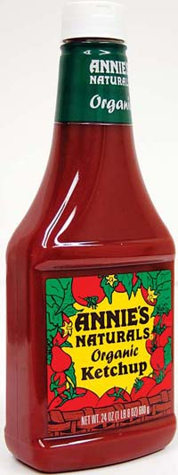

MATTHEW T. STALLBAUMER
According to research by the United States Department of Agriculture’s Agricultural Research Service, organic ketchup contains 50 percent more lycopene than ketchup made from conventional tomatoes.